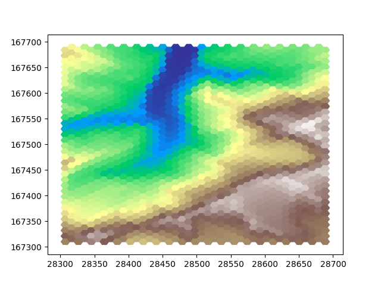
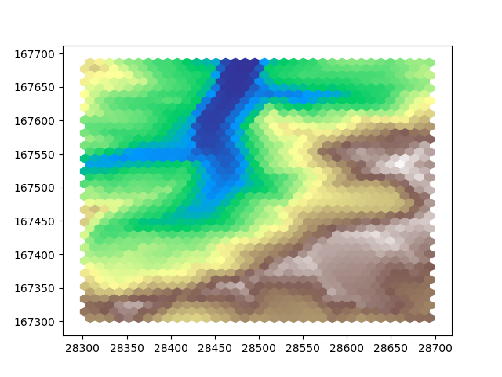

Note
Go to the end to download the full example code
Resampling
Resample data from one grid onto another.
Introduction
Resampling is a general term for creating a new dataset based on an existing one. This new dataset can have a different resolution, cell shape or Coordinate Reference System (CRS).
In GridKit, resampling is generally done by defining a new grid and resampling onto that new grid. In this example a DEM is read from a geotiff file. The read function returns a BoundedRectGrid object that will serve as the initial state. Several grids with different cell shapes are then defined on which the DEM data can be resampled.
import numpy
from gridkit import HexGrid, RectGrid, read_raster
dem = read_raster(
"../../tests/data/alps_dem.tiff", bounds=(28300, 167300, 28700, 167700)
)
print("Original resolution in (dx, dy):", dem.cellsize)
Original resolution in (dx, dy): (2.0, 2.0)
Warning
Be mindful of the projection of your dataset. This dataset is in ETRS89, which is defined in degrees, which can introduce a bias. Grids defined in degrees generally do not have consistent spacing in x and y direction, meaning that one degree north is not the same distance as one degree south. It is generally recommended to work with grids defined in a local CRS that is not defined in degrees but either meters or feet.
Resampling onto the a grid
Now we have read the DEM, we can define a new grid and resample onto it Let’s define a coarser grid, effectively downsampling the data. The reason for this is that we can better compare grids if we can actually distinguish the cells. Let’s define a rectangular grid with a cell size of 10x10 degrees. I am calling it rectdem for later on I will define hexagonal ones as well. To make sure it worked we can print out the cellsize after resampling
rectdem = dem.resample(RectGrid(dx=10, dy=10, crs=dem.crs), method="bilinear")
print("Downsampled resolution in (dx, dy):", dem.cellsize)
Downsampled resolution in (dx, dy): (2.0, 2.0)
Let’s plot the data to see what it looks like after downsampling
import matplotlib.pyplot as plt
plt.imshow(rectdem, extent=rectdem.mpl_extent, cmap="terrain")
plt.show()
Now let’s do the same, but on hexagonal grids. There are two flavours, “pointy” and “flat” hexagonal grids. Let’s show both so we can compare them both to each other and the downsampled rectangular grid. Hexagonal cells are smaller than square cells when given the same width, so to make a more fair visual comparisson let’s use a slightly larger cell width. This way we will have a roughly equal number of cells covering the area.
hexdem_flat = dem.resample(
HexGrid(size=11, shape="flat", crs=dem.crs), method="bilinear"
)
hexdem_pointy = dem.resample(
HexGrid(size=11, shape="pointy", crs=dem.crs), method="bilinear"
)
Since matplotlib’s imshow cannot be used to plot this hexagonal data, we have to get a little more involved. We can each cell as a polygon. This is more involved and less performant way of plotting than imshow, but it will get the job done. First, let’s create a function that determines the colors for our polygons.
import matplotlib.pylab as pl
def get_colors(data):
"""Obtain a color for each data value based on the data range of the original dem"""
cmap = getattr(pl.cm, "terrain")
vmin = numpy.nanmin(dem)
dem_values_normalized = dem.data.ravel() - vmin
vmax = numpy.nanmax(dem_values_normalized)
values_normalized = data.ravel() - vmin
values_normalized = values_normalized / vmax
colors = cmap(values_normalized)
colors[numpy.all(colors == 0, axis=1)] += 1 # turn black (nodata) to white
return colors
Now let’s create two new figures and populate these with the colored shapes of the two downsampled hexagon grids.
# define two new figures
fig_flat, ax_flat = plt.subplots()
fig_pointy, ax_pointy = plt.subplots()
# populate the figures with colored polygons
for geom, color in zip(hexdem_flat.to_shapely().ravel(), get_colors(hexdem_flat.data)):
ax_flat.fill(*geom.exterior.xy, alpha=1.0, color=color)
for geom, color in zip(
hexdem_pointy.to_shapely().ravel(), get_colors(hexdem_pointy.data)
):
ax_pointy.fill(*geom.exterior.xy, alpha=1.0, color=color)
plt.show()
- 
- 
This example can of course also be used to upsample your data.
Note
The three images in this example look different, but they are all equally ‘correct’. The visual difference results from the difference in positioning of the cells. Generally hexagon grids better represent rounded features, whereas rectangular grids are generally easier to work with and are more widespread.
Total running time of the script: (0 minutes 2.583 seconds)